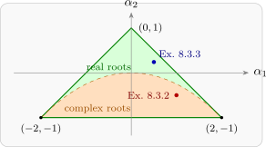

8.3 The second-order process
For the AR(2) process \(X_t = \alpha _1X_{t-1} + \alpha _2X_{t-2} + Z_t\), the roots \(\pi _1\), \(\pi _2\) of the quadratic \(y^2 - \alpha _1y - \alpha _2 = 0\) are \[ \pi = \frac {\alpha _1 \pm \sqrt {\alpha _1^2 + 4\alpha _2}}{2} , \] real if \(\alpha _1^2 + 4\alpha _2 \ge 0\) and complex if \(\alpha _1^2 + 4\alpha _2 < 0\).
Theorem 8.3.1 (The stationarity triangle). The AR(2) process is stationary, that is \(|\pi _1| < 1\) and \(|\pi _2| < 1\), if and only if \[ \alpha _1 + \alpha _2 < 1 , \qquad \alpha _2 - \alpha _1 < 1 , \qquad \alpha _2 > -1 . \] These three inequalities describe the triangle with vertices \((-2, -1)\), \((2, -1)\) and \((0, 1)\) in the \((\alpha _1, \alpha _2)\) plane (Figure 7).
Proof. Let \(g(y) = y^2 - \alpha _1y - \alpha _2 = (y - \pi _1)(y - \pi _2)\), so \(\pi _1\pi _2 = -\alpha _2\), \(g(1) = 1 - \alpha _1 - \alpha _2\) and \(g(-1) = 1 + \alpha _1 - \alpha _2\).
Only if. If both roots have modulus less than \(1\), then \(|\alpha _2| = |\pi _1\pi _2| < 1\). If the roots are real, they lie in \((-1, 1)\), and \(g\) is positive outside the interval between them, so \(g(1) > 0\) and \(g(-1) > 0\). If they are complex, \(g\) has no real zero and is positive everywhere, so again \(g(\pm 1) > 0\). These are the three inequalities.
If. Suppose the inequalities hold. If the roots are complex they are conjugates, so \(|\pi _1|^2 = \pi _1\bar \pi _1 = \pi _1\pi _2 = -\alpha _2 < 1\). If they are real, the inequalities give \(\alpha _1 < 1 - \alpha _2 < 2\) and \(\alpha _1 > \alpha _2 - 1 > -2\), so the vertex \(y = \alpha _1/2\) of the parabola lies in \((-1, 1)\). Since \(g(-1) > 0\), \(g(1) > 0\) and \(g\) dips to its minimum (which is \(\le 0\), as there are real roots) between them, both roots lie in \((-1, 1)\). □

The ac.f. of an AR(2)
From the first Yule–Walker equation, \(\rho (1) = \alpha _1\rho (0) + \alpha _2\rho (-1) = \alpha _1 + \alpha _2\rho (1)\), so \[ \rho (1) = \frac {\alpha _1}{1 - \alpha _2} , \] and the later values follow from \(\rho (k) = \alpha _1\rho (k - 1) + \alpha _2\rho (k - 2)\). When the roots are real and distinct, \(\rho (k) = A_1\pi _1^{|k|} + A_2\pi _2^{|k|}\), and the constants follow from \(\rho (0) = 1\), that is \(A_1 + A_2 = 1\), and \(\rho (1) = A_1\pi _1 + A_2\pi _2\). Substituting \(A_2 = 1 - A_1\), \[ \frac {\alpha _1}{1 - \alpha _2} = A_1\pi _1 + (1 - A_1)\pi _2 , \] so \[ A_1 = \frac {\dfrac {\alpha _1}{1 - \alpha _2} - \pi _2}{\pi _1 - \pi _2} , \qquad A_2 = 1 - A_1 . \] When the roots are complex, \(\pi = re^{\pm i\theta }\) with \(r = \sqrt {-\alpha _2}\) and \(\cos \theta = \alpha _1/(2\sqrt {-\alpha _2})\), and the two complex terms combine into a damped cosine wave, \(\rho (k) = r^k(a\cos k\theta + b\sin k\theta )\), with period \(2\pi /\theta \).
Example 8.3.2. Consider the AR(2) process \(X_t = X_{t-1} - \frac 12X_{t-2} + Z_t\). Is it stationary? If so, find its ac.f. and variance.
Solution. The roots of \(\phi (B) = 1 - B + \frac 12B^2 = 0\) are \(B = 1 \pm i\), with modulus \(\sqrt 2 > 1\), so both lie outside the unit circle and the process is stationary. (Equivalently, \(\alpha _1 = 1\), \(\alpha _2 = -\frac 12\) satisfy \(\alpha _1 + \alpha _2 = \frac 12 < 1\), \(\alpha _2 - \alpha _1 = -\frac 32 < 1\) and \(\alpha _2 > -1\).)
To find the ac.f., use the first Yule–Walker equation, \(\rho (1) = \rho (0) - \frac 12\rho (-1) = 1 - \frac 12\rho (1)\), giving \(\rho (1) = \frac 23\). For \(k \ge 2\), \(\rho (k) = \rho (k - 1) - \frac 12\rho (k - 2)\), and successive substitution gives \begin {gather*} \rho (2) = \tfrac 23 - \tfrac 12 = \tfrac 16 , \qquad \rho (3) = \tfrac 16 - \tfrac 13 = -\tfrac 16 , \\ \rho (4) = -\tfrac 16 - \tfrac 1{12} = -\tfrac 14 , \qquad \rho (5) = -\tfrac 14 + \tfrac 1{12} = -\tfrac 16 , \end {gather*} then \(\rho (6) = -\frac 1{24}\), \(\rho (7) = \frac 1{24}\), \(\rho (8) = \frac 1{16}\). The roots of the auxiliary equation \(y^2 - y + \frac 12 = 0\) are \(\frac 12(1 \pm i)\), the reciprocals of \(1 \pm i\), with \(r = 1/\sqrt 2\) and \(\theta = \pi /4\). So \(\rho (k) = 2^{-k/2}(a\cos \frac {k\pi }4 + b\sin \frac {k\pi }4)\), and \(\rho (0) = 1\) gives \(a = 1\), while \(\rho (1) = \frac 23\) gives \(\frac 1{\sqrt 2}(\frac 1{\sqrt 2} + \frac b{\sqrt 2}) = \frac 23\), so \(b = \frac 13\): \[ \rho (k) = 2^{-k/2}\Bigl (\cos \frac {k\pi }4 + \frac 13\sin \frac {k\pi }4\Bigr ) , \qquad k \ge 0 , \] a damped cosine with period \(8\) (Figure 6, panel 4). By Theorem 8.2.1, the variance is \[ \sigma _X^2 = \frac {\sigma _Z^2}{1 - (1)\frac 23 - (-\frac 12)\frac 16} = \frac {\sigma _Z^2}{5/12} = 2.4\sigma _Z^2 . \]
Solution. The auxiliary equation \(y^2 - 0.5y - 0.24 = 0\) has roots \(\pi _1 = 0.8\) and \(\pi _2 = -0.3\), both inside the unit circle, so the process is stationary. Then \(\rho (1) = 0.5/(1 - 0.24) = 0.6579\), and \[ A_1 = \frac {0.6579 - (-0.3)}{0.8 - (-0.3)} = \frac {0.9579}{1.1} = 0.8708 , \qquad A_2 = 0.1292 , \] so \[ \rho (k) = 0.8708(0.8)^{|k|} + 0.1292(-0.3)^{|k|} . \] As a check, the Yule–Walker recursion gives \(\rho (2) = 0.5(0.6579) + 0.24 = 0.5689\), and the formula gives \(0.8708(0.64) + 0.1292(0.09) = 0.5689\). The root \(0.8\) dominates, and the ac.f. decays much like that of an AR(1) with \(\alpha = 0.8\) (Figure 6, panel 3).
Questions on this section
Stuck on something here? Ask below and it stays attached to this topic.